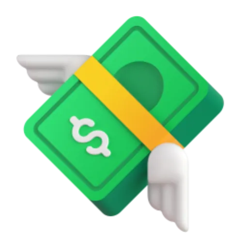
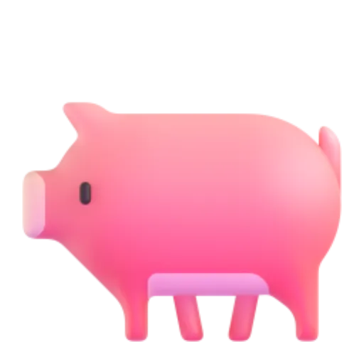

Oink · The problem
If you're paid in USDC, every payday asks how much stays as cash and how much gets invested. Acting on it means a wallet, a DEX, your own price checks, and hoping you sign the price you meant.
So the money just sits there.
Audience: USDC-paid freelancers and contractors. A hypothesis, not yet validated with interviews.

The product
Password + authenticator open an encrypted wallet in your browser. @tags, payment links, Mix.
Referenced USDC intake, finalized receipt check, exact BigInt split into SPYx / NVDAx / AAPLx orders.
Jupiter quote vs. your limits. Fails closed: deferred orders stay in USDC.
How Bell protects you
Pass → review and sign. Defer → your USDC stays put. Bell never invents a price.
Demo · under 3 minutes, on a phone
Video: [demo video link] · Live app: oinkwallet.vercel.app · APK: [link]
Any part not recorded on mainnet is shown in the labelled simulation at /demo.
Proof
unit tests passing: allocation, Bell policy and premium math, guards, MWA, journey
PostgreSQL integration tests: receipts, idempotent allocation, persist-before-broadcast, push, SKR quota
signer on every Bell trade: you. No server key, sponsorship or delegation, enforced and tested
Verified live (read-only): Jupiter routes for SPYx/AAPLx/NVDAx; xStock Token-2022 multipliers (1.0017–1.0057, not 1:1); SKR mint.
First mainnet fill: [Solscan link: pending]
Users / revenue: none claimed yet.
Business model · to validate
USDC-paid freelancers and contractors who already want a reserve plus stock exposure.
Payment links put Oink in front of every client who pays. Then platforms that pay contractors in USDC.
A small, disclosed fee on executed purchases (zero today by design), or a paid plan for payers running payroll links.
Next proof point: a consented pilot of 3–5 freelancers, measuring repeat paydays, fills, costs and drop-off (02-PILOT.md).
Why mobile · why Solana
Team · next steps
[Founder name, role, background, location]
[Why we understand USDC-paid workers]
github.com/not-a-vibe-coder/Oink · MIT · oinkwallet.vercel.app